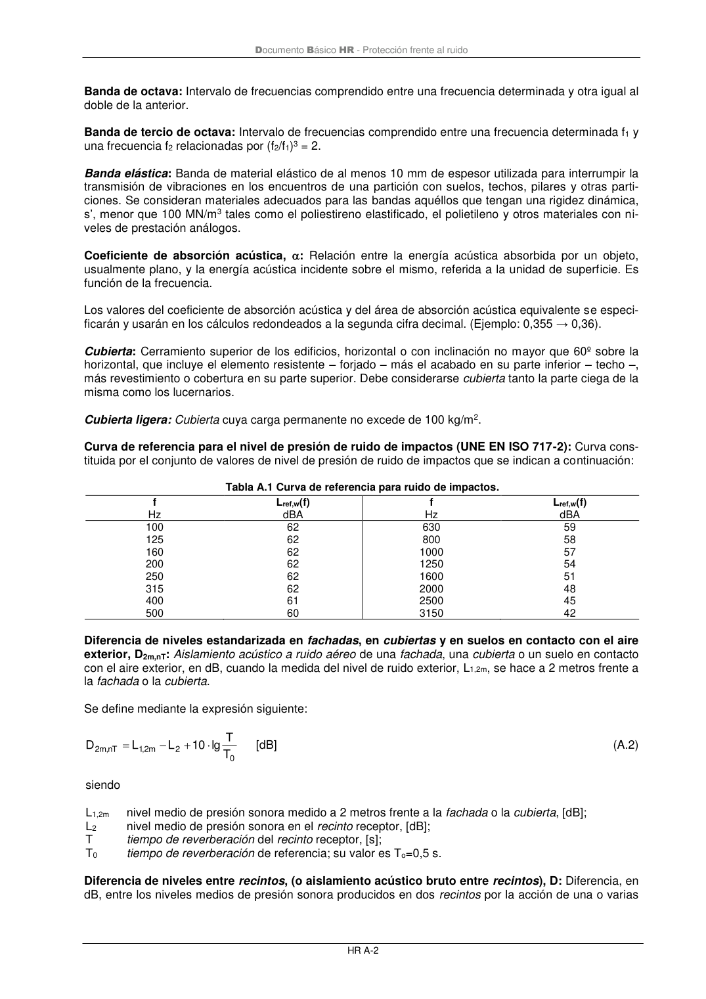

DB-HR · Banda de tercio de octava: Intervalo de frecuencias comprendido entre una frecuencia determinada f1 y una frecuencia f2 relacionadas por (f2/f1)3 = 2. · versión 2019-12-20 · capa oficial
Formatos: JSON compacto · Markdown · PDF fuente
Ámbito del documento · texto del ámbito · documento y tablas
ID técnico a0094 · PDF pág. 44-45 · jerarquía no validada por persona · contrastado con el literal de la página 44 (marcador PDF); no validado por persona · padre: a0092
Documento Básico HR - Protección frente al ruido HR A-2 Banda de octava: Intervalo de frecuencias comprendido entre una frecuencia determinada y otra igual al doble de la anterior. Banda de tercio de octava: Intervalo de frecuencias comprendido entre una frecuencia determinada f1 y una frecuencia f2 relacionadas por (f2/f1)3 = 2. Banda elástica: Banda de material elástico de al menos 10 mm de espesor utilizada para interrumpir la transmisión de vibraciones en los encuentros de una partición con suelos, techos, pilares y otras parti- ciones. Se consideran materiales adecuados para las bandas aquéllos que tengan una rigidez dinámica, s’, menor que 100 MN/m3 tales como el poliestireno elastificado, el polietileno y otros materiales con ni- veles de prestación análogos. Coeficiente de absorción acústica, : Relación entre la energía acústica absorbida por un objeto, usualmente plano, y la energía acústica incidente sobre el mismo, referida a la unidad de superficie. Es función de la frecuencia. Los valores del coeficiente de absorción acústica y del área de absorción acústica equivalente se especi- ficarán y usarán en los cálculos redondeados a la segunda cifra decimal. (Ejemplo: 0,355 → 0,36). Cubierta: Cerramiento superior de los edificios, horizontal o con inclinación no mayor que 60º sobre la horizontal, que incluye el elemento resistente – forjado – más el acabado en su parte inferior – techo –, más revestimiento o cobertura en su parte superior. Debe considerarse cubierta tanto la parte ciega de la misma como los lucernarios. Cubierta ligera: Cubierta cuya carga permanente no excede de 100 kg/m2. Curva de referencia para el nivel de presión de ruido de impactos (UNE EN ISO 717-2): Curva cons- tituida por el conjunto de valores de nivel de presión de ruido de impactos que se indican a continuación: Tabla A.1 Curva de referencia para ruido de impactos. f Hz Lref,w(f) dBA f Hz Lref,w(f) dBA 100 125 160 200 250 315 400 500 62 62 62 62 62 62 61 60 630 800 1000 1250 1600 2000 2500 3150 59 58 57 54 51 48 45 42 Diferencia de niveles estandarizada en fachadas, en cubiertas y en suelos en contacto con el aire exterior, D2m,nT: Aislamiento acústico a ruido aéreo de una fachada, una cubierta o un suelo en contacto con el aire exterior, en dB, cuando la medida del nivel de ruido exterior, L1,2m, se hace a 2 metros frente a la fachada o la cubierta. Se define mediante la expresión siguiente: 0 2 m 2 ,1 nT , m 2 T T lg 10 L L D + − = [dB] (A.2) siendo L1,2m nivel medio de presión sonora medido a 2 metros frente a la fachada o la cubierta, [dB]; L2 nivel medio de presión sonora en el recinto receptor, [dB]; T tiempo de reverberación del recinto receptor, [s]; T0 tiempo de reverberación de referencia; su valor es To=0,5 s. Diferencia de niveles entre recintos, (o aislamiento acústico bruto entre recintos), D: Diferencia, en dB, entre los niveles medios de presión sonora producidos en dos recintos por la acción de una o varias Documento Básico HR - Protección frente al ruido HR A-3 fuentes de ruido emitiendo en uno de ellos, que se toma como recinto emisor. En general es función de la frecuencia. Se define mediante la expresión siguiente: 2 1 L L D − = [dB] (A.3) siendo L1 nivel medio de presión sonora en el recinto emisor, [dB]; L2 nivel medio de presión sonora en el recinto receptor, [dB]. Diferencia de niveles estandarizada entre recintos interiores, DnT: Diferencia entre los niveles me- dios de presión sonora producidos en dos recintos por una o varias fuentes de ruido emitiendo en uno de ellos, normalizada al valor 0,5 s del tiempo de reverberación.En general es función de la frecuencia. Se define mediante la expresión siguiente: 0 2 1 nT T T lg 10 L L D + − = [dB] (A.4) siendo L1 nivel medio de presión sonora en el recinto emisor, [dB]; L2 nivel medio de presión sonora en el recinto receptor, [dB]; T tiempo de reverberación del recinto receptor, [s]; T0 tiempo de reverberación de referencia; su valor es T0=0,5 s. Diferencia de niveles estandarizada, ponderada A, en fachadas, en cubiertas y en suelos en con- tacto con el aire exterior, D2m,nT,A: Valoración global, en dBA, de la diferencia de niveles estandarizada de una fachada, una cubierta o un suelo en contacto con el aire exterior, D2m,nT, para ruido rosa. Se define mediante la expresión siguiente:

PDF fuente redistribuible: copia fiel enlazada en esta página (SHA256 verificado).